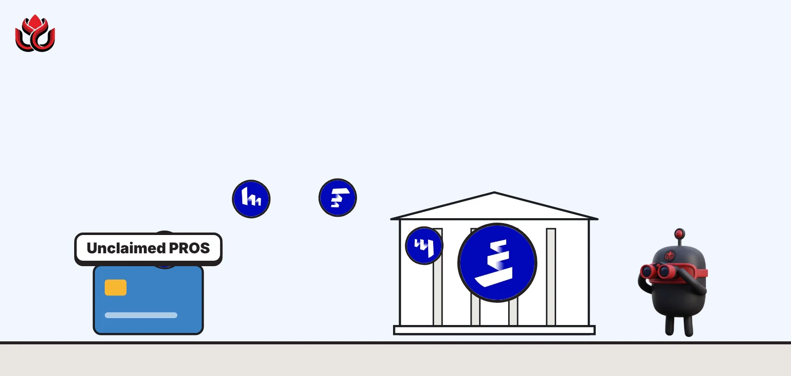
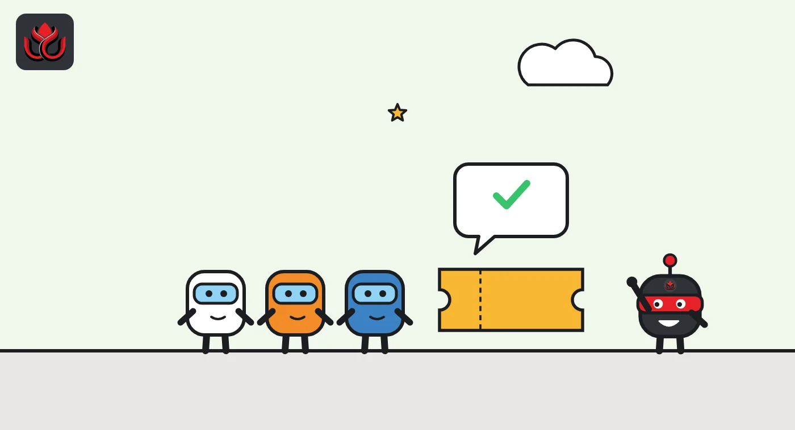
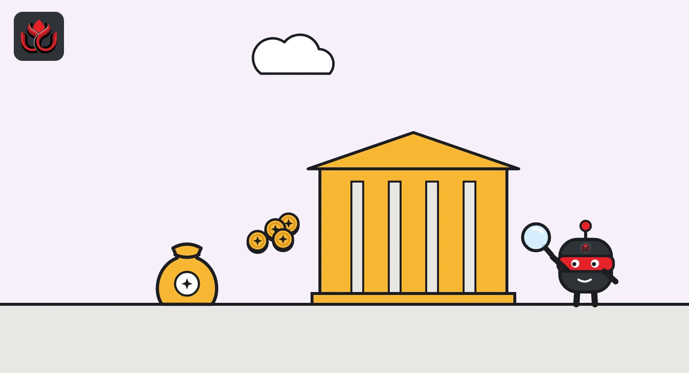

Pharos' PROS airdrop is closed. Unclaimed tokens go to the foundation, not a burn
The 180-day claim window ended on October 25, 2026. Unclaimed PROS returns to the Pharos Foundation, only 13.6% of the 1 billion supply circulates, and Pharos has not said how many tokens came back.

Key points
- Eligible users had 180 days from April 28, 2026, to claim PROS. The window closed on October 25 and the portal shows "Claim Ended."
- Unclaimed PROS goes back to the Pharos Foundation instead of being burned; no count has been published.
- Only 135.6 million of 1 billion PROS circulate. The token traded near $0.65 on October 25 and about $0.50 on November 2.
The window has closed
The Pharos airdrop closed on October 25, 2026, and any PROS tokens left unclaimed now go back to the Pharos Foundation. Eligible users had 180 days from April 28 to claim, according to the Pharos airdrop FAQ. After that date, the FAQ says, the airdrop website closes. The FAQ gives no time of day for the cutoff.
The claim portal now shows "Claim Ended" with its countdown at zero. We found no announcement of an extension on the official pages we checked.
Pharos is a blockchain network that ran a public testnet before its token launch. PROS is its native token.
Who was eligible
Four groups qualified for PROS, according to the claim portal:
- testnet participants
- contributors to the "Stake Before the Stake" campaign
- holders of certain Pharos Discord roles
- users of an OKX Wallet campaign
People who qualified in more than one group had their allocations combined into a single claim. To remove one barrier, Pharos pre-loaded each eligible wallet with the 0.05 PROS needed to pay the network fee for claiming, so users did not need to buy tokens first.
Access was not open everywhere. The FAQ says the site blocked users whose IP address came from restricted regions, for compliance reasons, and pointed to its terms and conditions for the full list.

Claim options
Claimers could pick from several claim strategies. They could change that choice only during a short registration period from April 23 to 25, the FAQ says, after which the selection was locked. Anyone who did not pick a strategy before the window closed was given the default, Instant Claim, according to the portal.
The official pages we checked do not set out the terms of the other strategies. Pharos has also not published, in the sources we could find, how many people claimed or how many tokens went unclaimed.
Supply and price
CoinGecko lists a circulating supply of 135.6 million PROS out of a total of 1 billion, or 13.6%. On October 9, PROS traded near $0.64 with a market value of about $87 million and daily volume of about $3 million, according to CoinGecko. On October 25, the day the window closed, it was near $0.65, with a market value of about $88 million.
The price has fallen since. On November 2, PROS was about $0.50, with a market value near $68 million. Its all-time high was $1.13 on April 28, 2026, the day claims opened, and its low was about $0.32 on July 21.
At $0.50, the full 1 billion supply is valued at about $503 million, CoinGecko shows. That is more than seven times the value of the tokens now circulating.
PROS supply
million PROS
Source: CoinGecko. Not circulating is the difference from the 1 billion total.

Timeline
Registration period to choose a claim option
180-day claim window opens; PROS hits its all-time high of $1.13
PROS hits its low of about $0.32
PROS near $0.64, market value about $87 million
Claim window ends; unclaimed tokens return to the foundation
PROS near $0.50
Burn or keep: how projects handle leftovers
Projects take different routes with airdrop tokens nobody claims. Pharos sends them back to its foundation. Meteora, whose LP Stimulus Season 2 claims closed on October 21, did not say in its governance post what happens to unclaimed MET.
Each choice has a different effect on holders. A burn permanently reduces supply. A return to a foundation keeps those tokens available for later use, such as grants or new incentive programs, which can add to circulating supply in the future. Having no stated policy leaves holders guessing.
For anyone who missed the deadline, the safest assumption is that the official route has closed. Copycat claim pages often appear around airdrop deadlines. A genuine claim never needs a recovery phrase, a private key or an upfront payment.
Risks for holders
- Foundation holdings grow. Unclaimed tokens returning to the foundation add to the share controlled by one entity.
- Low float. With 13.6% circulating, future unlocks can weigh on the price.
- Scam pages. Fake claim sites often keep running after a deadline.
- No public count. Pharos has not said how many tokens came back.
LC Insight analysis
This section is our reading of the facts above, not a statement of fact.
- We think returning unclaimed tokens to the foundation, not burning them, deserves more scrutiny. It keeps that supply available for future spending, and holders cannot see how much came back.
- Pharos should publish the number. A public count of returned PROS and a plan for using it would cost little and answer the obvious question.
- About $68 million circulating against about $503 million fully diluted is a wide gap. That gap usually closes through unlocks, not price.
What's next
- A Pharos Foundation disclosure of unclaimed PROS
- The PROS unlock schedule for team and investors
- Any follow-up incentive season using returned tokens
Disclaimer. This article is based on public information and the sources listed below as of the update time shown. It is for information only and is not investment, legal or tax advice. Figures may change as companies and authorities publish new data.